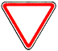

знак 2.3
Приложение 1 (дорожные знаки)
Закон Грузии «О дорожном движении» № 1830-რს, консолидированная редакция 25.06.2026 (Matsne, публикация 36). Юридическую силу имеет грузинский текст, русский — перевод. Источник: Matsne (рус.), Matsne (груз.).

Текст (рус., дословно)
2.3. «Уступите дорогу» – дорога, по которой движущийся водитель обязан уступить дорогу водителю, движущемуся по пересекаемой дороге, а при наличии таблички 8.13 – водителю, движущемуся по главной дороге. Знак 2.3 устанавливается вне населенного пункта предварительно на расстоянии 150–300 метров до перекрестка в сочетании с табличкой 8.1.1, если перед перекрестком установлен знак 2.3, или в сочетании с табличкой 8.1.2, если перед перекрестком установлен знак 2.4.
Официальный текст (груз.)
2.3. „დაუთმე გზა“ − გზა, რომელზე მოძრავი მძღოლიც ვალდებულია გზა დაუთმოს გადასაკვეთ გზაზე მოძრავ მძღოლს, ხოლო 8.13 დაფის არსებობისას – მთავარ გზაზე მოძრავ მძღოლს. 2.3 ნიშანი დაუსახლებელ პუნქტში იდგმება წინასწარ გზაჯვარედინამდე 150−300 მეტრ მანძილზე 8.1.1 დაფით, თუ გზაჯვარედინის წინ დადგმულია 2.3 ნიშანი, ან 8.1.2 დაფით, თუ გზაჯვარედინის წინ დადგმულია 2.4 ნიშანი.
Где это в курсе
Билеты, которые на неё ссылаются (4)
По ссылкам на закон в пояснениях базы (с учётом наших уточнений онтологии).
Ссылаются в законе
Постоянная ссылка: norm/sign-2.3.html